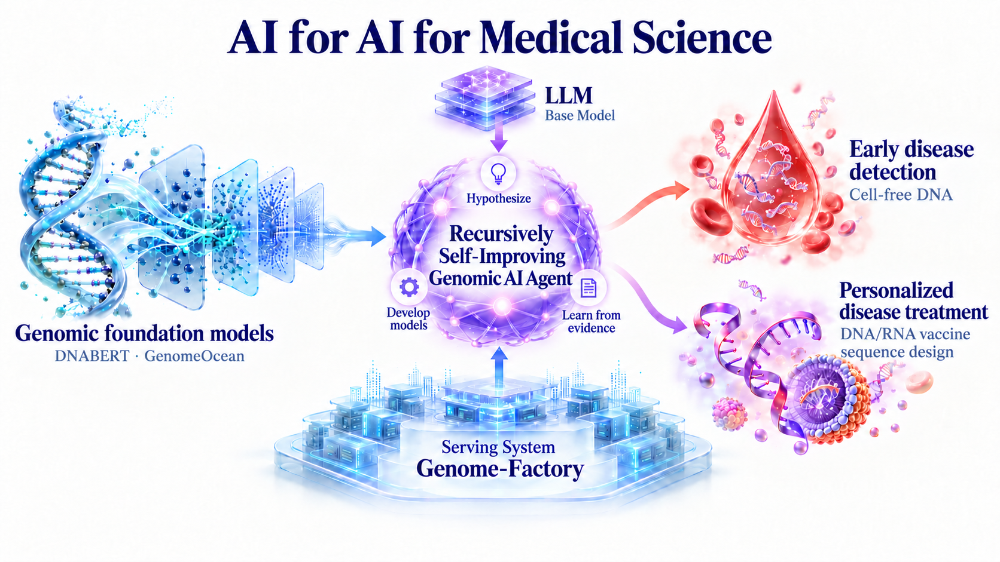

Research internship
Genomics Deep Learning Engineering Intern
Genomic foundation models for genome annotation
I’m a 4th-year Ph.D. candidate in Computer Science & Biochemistry and Molecular Genetics at Northwestern University, co-advised by Prof. Han Liu and Prof. Yaping Liu. My research focuses on AI for Medical Science, integrating recursively self-improving AI agents with genomic foundation models to advance noninvasive early cancer detection using cell-free DNA and personalized cancer treatment through DNA/RNA vaccine sequence design.
Previously, I received my bachelor’s degree in Mathematics from Fudan University in 2023, advised by Prof. Tao Chen, and was recognized as an Outstanding Graduate of Fudan University.
Research internship
Genomics Deep Learning Engineering Intern
Genomic foundation models for genome annotation
Research internship
Machine Learning Researcher
Cell-free DNA analysis
Research funding
NSF-supported research allocation
For genomic foundation model training
National AI Research Resource
Award / allocation ID: NAIRR240377
D-DOIT accepted to NeurIPS 2026.
NewPOLO accepted to KDD 2026 as an Oral.
Four papers accepted to ICML 2026, including Genome-Factory. ICML(a) ICML(b) ICML(c) ICML(d)
Sci2Pol accepted to ICLR 2026.
DNABERT-S accepted to Bioinformatics & ISMB 2025 (Oral).
One paper accepted to ICLR 2025.
One paper accepted to NeurIPS 2024.
My research focuses on AI for Medical Science, integrating recursively self-improving AI agents with genomic foundation models to advance noninvasive early cancer detection using cell-free DNA and personalized cancer treatment through DNA/RNA vaccine sequence design.

Including GenomeOcean, a state-of-the-art pretrained genomic foundation model.
Including D-DOIT and DiMOS for DNA/RNA sequence design, and DoMinO for discrete flow matching policy optimization.
Including Genome-Factory, an integrated platform for training, adapting, evaluating, and deploying genomic models.
Genomic foundation models, scientific design, model infrastructure, and learning theory.
Feinberg School of Medicine, Northwestern University
Shanghai Jiao Tong University School of Medicine
ISMB 2025 · Oral presentation
Debora Marks Lab, Harvard Medical School
I’m interested in entrepreneurship in AI for medical science. During my undergraduate studies, I founded the Quantitative Investment Association (QIA), the largest nonprofit organization in quantitative finance in China, connecting students, researchers, and industry professionals in quantitative finance.
I host research interns working on genomic foundation models, scientific sequence design, and AI agents for medical science, with GPU resources available for experiments. If you’re interested, email me your CV and a short summary of your research experience.
Get in touch Internship details & past mentees ↗